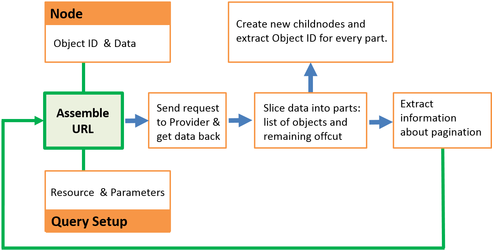
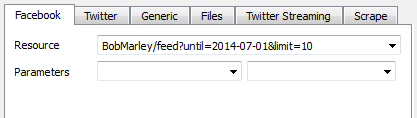
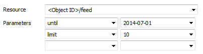
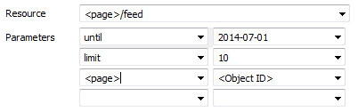

Please notice that this help file may describe an older or even newer version of Facepager. Feel free to support us by correcting any errors.
Table of Contents
The main work Facepager is doing for you consists of three steps for every node (see the process model below). Firstly it assembles URLs from node data and the query setup. Read the help section about placeholders and keys to get an understanding of the mechanism. Secondly data is requested from the web by using these URLs. You can see the URLs in the status log. In the third step the downloaded data is sliced up and put into the database as new nodes – ready for export or as new starting points for fetching data.
The settings on the right side of the Query Setup apply to all the different modules for fetching data.
|
Node level |
This setting works like a filter. If you select a parent node and increase node level by one, data is fetched for all child nodes. When selecting multiple nodes, always check the level. |
|
Object types |
Every node has an object type. For example, manually added nodes are called seeds and downloaded nodes are called data. Here you control the types of nodes considered when fetching data. Node types are separated by comma. |
|
Parallel Threads |
If you increase the thread count, data is fetched in parallel. This results in faster speed when dealing with thousands of nodes. Be aware that API providers may ban you if you are going too fast. You should use this option very carefully. |
|
Requests per minute |
Some providers limit the amount of data you are allowed to fetch in a certain time. In this case it might be useful to decrease the requests per minute and slow down fetching. |
With the Facebook module you can get data via the so called Graph API. You can access public available data or any data you are allowed to see with your account – that is at least data about you and your friends. See the documentation provided by Facebook for further details. Some basic options are explained below. Look out for tooltips in the user interface, they sometimes provide some details about selected options.
On Facebook every object has at least one ID. This identifier is shown in the column "Object ID" in the main window and is the starting point for all queries to the Facebook-API. You need to add some IDs as top nodes to get any data. Some examples for Object IDs are:
.
|
me |
Refers to yourself. |
|
BobMarley |
Refers to the page http://www.facebook.com/BobMarley. As you can see identifiers are included as the last part of URLs. |
|
117533210756 |
Also refers to the page http://www.facebook.com/BobMarley. Every object has such a numerical id. When fetching data for BobMarley you will find this numerical id in the detail data. |
With the Facebook Graph API you can get data about the referred objects themselves, as well as data about related objects. The relations between different objects are called edges. Different types of objects have different edges. For example, a page has posts, albums, likes, events and some other edges. Whether you fetch data about the object or about related objects depends on the resource setting explained below.
|
Resource |
Select the object or entity you want to fetch from Facebook. The given options are suggestions, which may help you to know what is
possible. For example, if you are interested in the feed of a page, choose “<page>/feed”. You then have to define the
<page>-parameter, because text in angle brackets is considered as a placeholder. Usually the <page>-parameter will be set to
<Object ID>, referring to the Object ID of the currently selected node.
|
|
Parameters |
You type the parameter names into the fields of the left column and put the belonging parameter values into the right ones. Placeholders used in the resource field have to be defined here and will be replaced by the given value. See “About Placeholders and Keys” for further explanations. If your resource is set to “search”, the parameter “q” denotes the search term. You should set it to “<Object ID>”, if you added your terms as nodes. Another way would be to type the term right into the parameter field on the right side. To further specify the type of objects you want to find, choose the parameter “type” and select one of the given options. |
|
Maximum pages |
With this setting you set the number of “pages” Facepager tries to download for the selected node. Imagine you want to fetch 900 comments for a Facebook post. Facebook won’t let you get all these comments at once. While the limit of the Facebook API lies at about 500, Facepager automatically sets the limit to 100 if not specified otherwise in the parameters (see below). Thus, for 900 comments there are 9 "pages" of information available, each containing 100 comments. See the documentation of the Facebook Graph API for more information about pagination. |
|
Access Token |
Crawling data from Facebook requires a login with your user credentials. Before starting your data collection process, you have to complete the login via the corresponding button. A login page directly served by Facebook will open and once the login is successful, Facepager gets an access token. With this access token Facepager acts on behalf of the logged in user. Note: The access token is stored locally on your computer. No personal data is submitted to the developers or any other authority. |
Some useful parameters are listed below.
|
limit |
Specifies the number of individual objects that should be returned on each page. Because every request is limited, there may be more objects available than actually collected. More information regarding the pagination is found in the documentation of the Facebook Graph API. |
|
since |
A date in the form YYYY-MM-DD denoting the objects creation time. For example, since="2013-07-13" would grab comments made after the 13.07.2013. Not every Facebook object has a timestamp, e.g. for the user’s friends this parameter has no effect. |
|
until |
A date of the same form like above. For example, until="2013-07-17" would grab comments made before the 17.07.2013. Notice that the "until"-parameter must be incremented by one day, because the date is associated with the start of the day at midnight. A combination of "since" and "until" is possible. |
The concepts of fetching data from Twitter are very similar to the Facebook module described above, especially regarding pagination and login. For detailed information on specific options have a look at the documentation of the REST API provided by Twitter. A lot of information from the documentation also shows up in tooltips when hovering with the mouse cursor over options in the query settings or even over keys in the data view.
In addition there is a “Twitter Streaming” tab, which allows you to fetch data from Twitter in real-time. See the documentation provided by Twitter for further information.
Starting nodes for fetching data from Twitter usually are search terms, user ids or user names. For example, if you want to get the most recent tweets of someone, you would add his or her username as a node. Once you fetched some tweets, take a look at the detail data. Every tweet has a unique numerical id, which subsequently may serve as starting point or otherwise be used in the parameters.
|
Resource |
The most basic resources are “statuses/user_timeline” to get the tweets of a specific user and “search/tweets” for searching tweets by terms, hashtags or mentioned users. Tooltips with detailed explanations are showing up when you hover an item in the drop down list. |
|
Parameters |
When selecting a resource, the drop down lists are filled automatically with possible parameters. Look out for tooltips. Some parameters are mandatory, depending on the selected resource. For example, you have to provide the parameter “q” when searching tweets. Simply add search terms or hashtags as nodes and set the parameter to <Object ID>. For getting tweets from a specific user, you either have to specify the user_id or the screen_name. |
|
Maximum pages |
You can’t get all tweets of all times in a single request. But you may get bunches of tweets one after another, which is called pagination. Increase the maximum pages to get more results. Twitter provides different kinds of pagination and Facepager tries to automatically detect the best way. See the documentation of Twitter for further information. |
Useful parameters:
|
max_id |
Twitter normally gives you the most recent tweets. To access older tweets you need to know, that IDs for tweets are counted up in the order of the time posted. With the max_id parameter you can then restrict the results to contain only tweets posted before a given ID (plus the tweet with the given ID). |
|
since_id |
In analogy to max_id you may restrict the result by specifying a since_id. Notice that there are limits to the number of tweets accessible by the API. You can’t always go back in time as far as you want. |
With the Generic module you can fetch data from a lot of different APIs. For this an API needs to fulfill two preconditions: it has to deliver JSON encoded data and access should be possible without sophisticated authorization procedures. Examples for APIs meeting these criteria include Youtube and Google+, see the presets coming with Facepager and the providers documentation. Authorization is sometimes done by access tokens, which you get from the provider and set as parameters in the Query Setup.
|
URL path |
You enter the URL to the API into this field. The specific formulation of URLs has to be looked up in the documentation of the API provider. You can use placeholders to refer to node data, see the help section about placeholders and keys. |
|
Parameters |
Every URL consists of different parts. One of these parts is called the query string, which consists of name-value pairs concatenated with
ampersands. The query string starts with a question mark. For example, the query string of the URL “https://gdata.youtube.com/feeds/
api/videos?q=Facepager&alt=json&v=2” is “?q=Facepager&alt=json& v=2”. By using parameters you define the name-value pairs
in the query string.
|
|
Key to extract |
Use this setting to specify which objects you are interested in. If you are fetching data from Youtube, e.g. “feed.entry” is the key to the
videos. Just try it out with a blank value and look at the Data View where you find possible keys. Facepager will extract the data
addressed by the key and create a childnode. If the addressed data consists of a list, one childnode for every list item is created. The
not addressed, remaining data will be put into an additional childnode of the type “offcut”.
|
|
Key for ObjectID |
With this setting you choose the key, which’s value (after extraction) should denote the Object ID of the node. |
With the Files module you can download files and store them on your hard drive. This could be webpages, pictures from Facebook or any other web resource. For example, look at the data fetched for the Facebook page of Bob Marley. The data was fetched with the Facebook-module:

You will find the URL to the cover photo in the key “cover.source”. One option would be to copy the URL and paste it into the URL path-field of the Files module. After specifying a folder and clicking Fetch Data you will find the picture on your hard drive in the selected folder. Additionally a child node is created containing information about the file location.
Another option would be to use a placeholder in the URL path. In this example the placeholder would be “<cover.source>”. Please read the section about placeholders and keys for more information.
With the Files module you have the following options:
|
URL path |
The web address of the file you want to download. You can use placeholders to use node data in the URL, see the help section about placeholders and keys. |
|
Parameters |
You may specify key-value pairs in the query string of the URL or define placeholders. Look at the help for the Generic module to get an understanding of query strings. |
|
Folder |
The folder on your hard drive where the file should be stored. |
|
Custom filename |
Normally, the filename would be derived from the URL path. Alternatively, you can specify the filename here. Using placeholders like “<Object ID>” is possible. Files never get overwritten, because the current date and time is always appended by Facepager. If that is not enough, a running number is added to the file name. |
|
Custom file extension |
Normally, Facepager tries to guess the file extension by the content type of the file. If you know better, specify the file extension, including the leading dot, e.g. “.jpg”. |
One of the main features of Facepager is, that it helps you with assembling URLs for an API. Placeholders are very useful for this, because they allow you to use data of your nodes. Thus, you don’t need to manually formulate URLs for every single node. In the query setup, every text in angle brackets (like “<Object ID>”) is handled as a placeholder.
You may use these placeholders in the URL path field (or the resource field respectively) as well as in the parameter values. There are three types of placeholders:
Imagine you just added a new node "BobMarley" and you want to fetch the last 10 posts before the 1st of July in 2014 from the corresponding Facebook page. There are different equivalent ways to achieve this. One option would be to just type the URL with all needed parameters into the Resource field:
While this works, it will always give you posts from the BobMarley page, even if you add other nodes to the Nodes View. The very same URL would be assembled with the following options, because the placeholder “<Object ID>” is replaced with the Object ID of the node under consideration:
|
<Object ID> is replaced by BobMarley |
In contrast to this way, the suggestions in the dropdown list of the resource field do contain completely different placeholders like “<page>” or “<user>”. So if you select “<page>/feed” as resource, you have to choose a value, which replaces the placeholder “<page>”. Usually this will be “<Object ID>”:
|
<Object ID> is replaced by BobMarley. |
The URL path generated to fetch the data for the three example settings is always "BobMarley/feed?until=2014-07-01&limit=10".
Another useful concept of Facepager is addressing node data by keys. You can use this concept in placeholders or to define the columns of the Nodes View. The data underlying the Data View is formatted as JSON, which follows a quite simple logic of key-value pairs. Furthermore, data may be arranged as a nested hierarchy. Nested key-value pairs are addressed by chaining the keys separated by a dot, e.g. “user.name”. To quickly get a specific key you can select it in the Data View and click “Add Column”. This will add the corresponding key to the Custom Table Columns field right below the Data View.
For addressing multiple values, you may use the asterisk*-Operator. Replace a key with the asterisk to address all keys on the same level. All values will be concatenated by semicolons. For example “comments.data.0.message” will only address the first comment, while “comments.data.*.message” will give you the messages of all comments, separated by semicolons:

Remember, that only columns defined in the Column Setup are exported by Facepager. So keys relate to columns in the resulting Excel sheet, while values are the row-values in a single column.
Use presets to store and load your settings for certain API calls. These presets store your custom table column setup, the selected query module and its settings. No data or private access tokens are stored! To edit presets, either load an existing one, make changes and store them as a new preset, or go to the presets folder and edit the preset with a text-editor.
Presets marked with an asterisk are stored inside the application directory and are included by default. Your own presets are automatically stored in your user directory (e.g. C:\Users\username\Facepager\Presets) and may be copied, distributed and shared with other users.
We encourage you to share your presets with us - do so by mailing the .json-file to the authors of the Facepager and provide a short description of your preset!
The buttons in the preset window have the following meanings:
|
Apply |
Load the selected preset. |
|
New Preset |
Creates a new preset and stores the current column setup and query settings. Adjust these settings before creating the new preset. |
|
Delete Preset |
Deletes the currently selected preset from the list. Presets marked with an asterisk are default presets and cannot be deleted. |
|
Cancel |
Close the Preset Window |
Keyling, Till / Jünger, Jakob (2014). Facepager 3. Tool for Downloading API Data. Online at https://github.com/strohne/Facepager.
Facepager uses icons from Pyconic, licenced under CC BY 3.0. Thanks for sharing.
Facepager was developed unter Python 2.7. It depends on the following libraries: PySide (licensed under the LGPL), SQLAlchemy (licensed under MIT License), dateutil (licensed under the PSF licence), requests (licensed under the Apache License, Version 2.0), rauth (licensed under MIT License). Thank you all for your great work!